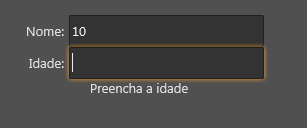
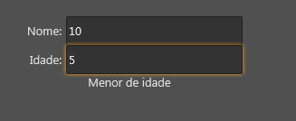
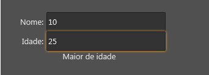

Lua Form e NodeDatabase
Lua Form e NodeDatabase
O Lua Form foi desenvolvido de forma a se conectar facilmente ao NodeDatabase para criar interfaces que salvam dados.
Para integrar um lua form ao Node Database é preciso duas coisas:
- Preencher o atributo "field" das tags que suportam NodeDatabase
- Definir um escopo de dados do Lua Form, isto é, informar em qual nodo de qual NodeDatabase o LuaForm salvará os dados.
- Observação importante: O SDK3 faz isto automaticamente para você se for um modelo de ficha, se estiver usando a tag recordList ou se for uma janela acoplável.
Tags que suportam NodeDatabase
As tags/controles que se conectam ao NodeDatabase são:
- label
- edit
- checkBox
- comboBox
- colorComboBox
- image
- imageCheckBox
- textEditor
- recordList
- dataLink
- dataScopeBox
- progressBar
Escopo de dados
Toda tag/controle que suporta NodeDatabase precisa de um escopo de dados, isto é, um objeto nodo de um nodedatabase onde os dados serão salvos.
As tags form, popup e dataScopeBox possuem o método "controle:setNodeObject" que permitem definir o escopo de dados e, após definido um objeto nodo como escopo, todas as tags que estão dentro passarão a salvar/carregar dados neste obeto nodo.
Exemplo:
Suponha a seguinte interface:
| \<form name="minhaTagForm"> \<edit field="campoNome"/> \</form> |
|---|
Se o seguinte trecho de código Lua executar:
| minhaTagForm:setNodeObject(NODO_A) |
|---|
o edit passará a ler e salvar dados em NODO_A.campoNome...\
\ Agora, se o seguinte trecho de código Lua executar:
| minhaTagForm:setNodeObject(OUTRO_NODO) |
|---|
o edit agora passará a ler e salvar dados em OUTRO_NODO.campoNome...\ \ \ E, por fim, se o seguinte trecho de código Lua executar:
| minhaTagForm:setNodeObject(nil) |
|---|
o edit agora ficará desabilitado, pois utilizamos o atributo "field" mas não há nodo escopo de dados associado.
Importante: O SDK3 define o escopo de dados automaticamente para os modelos de fichas, ao usar a tag recordList e para as janelas acopláveis:
- Quando o usuário abre uma ficha no RRPG, o SDK3 carrega o NodeDatabase do personagem e define seu objeto nodo raiz como escopo de dados do form.
- No caso da tag recordList, o SDK3 automaticamente define o escopo de dados de cada painel de item.
- Quando o usuário ativa um janela acoplável, o SDK 3 carrega o NodeDatabase do form (se ele tiver a propriedade dataType preenchida) e define o objeto nodo raiz como escopo de dados do form.
Preenchendo o atributo "field"
Nas tags que suportam NodeDatabase, o atributo "field" contém o nome do campo de um objeto nodo a qual o controle deve se conectar.
Exemplo:
| \<?xml version="1.0" encoding="UTF-8"?> \<form name="frmFichaTeste"> \<edit field="nomeESobrenome"/> \<edit field="caracteristicas"/> \<label field="forca"/> \<label field="destreza"/> \</form> |
|---|
No exemplo acima, quando a interface estiver rodando, o primeiro edit irá se ligará ao campo "nomeESobrenome" do objeto nodo, isto é:
- Exibirá na interface o conteúdo do campo "nomeESobrenome" do objeto nodo escopo.
- Quando alguém alterar o valor do campo "nomeESobrenome" do objeto nodo escopo, o edit captará a mudança e automaticamente mostrará o novo valor na interface.
- Desde que estejam acessando o mesmo nodedatabase, este comportamento acontece mesmo se a pessoa que alterar o valor estiver em outro computador.
- Se o usuário alterar o texto do edit, o novo valor será salvo no campo "nomeESobrenome" do objeto nodo escopo.
Idem para as demais tags que tem o atributo "field" definido.
Acessando/salvando dados que estão em um nodo filho.
É possível utilizar o caractere "." para informar que o campo na verdade está em um nodo filho do nodo escopo.
Exemplo:
| \<?xml version="1.0" encoding="UTF-8"?> \<form name="frmFichaTeste"> \<edit field="atributos.modificadores.forca"/> \<edit field="nodoFilho.nodoNeto.campo1"/> \<edit field="nodoFilho.campo2"/> \</form> |
|---|
No exemplo acima, o primeiro edit se ligará ao campo "forca" do nodo de nome "modificadores" que está dentro do nodo de nome "atributos" que, por sua vez, está dentro do nodo escopo.
Se o usuário alterar o conteúdo do edit e o não existir um nodo de nome "atributos" no nodo escopo, o SDK3 automaticamente criará este nodo antes de salvar os dados. Idem para o nodo "modificadores" dentro do nodo "atributos".
Variável sheet
Os códigos que estão dentro de um Lua Form tem acesso à uma variável chamada "sheet" que representa o objeto nodo escopo do form.
Exemplo:
| \<?xml version="1.0" encoding="UTF-8"?> \<form name="frmFichaTeste"> \<edit field="campoDeForca"/> \<button onClick="sheet.campoDeForca = 8;"/> \</form> |
|---|
No exemplo acima, ao clicar no botão, a propriedade "campoDeForca" será alterado para "8" e a mudança será refletida no edit já que está ligado ao mesmo campo que sofreu alteração.
Veja também:
Exemplos
Exemplo 1 - Pequeno cadastro que informa se a pessoa é maior de idade
| \<?xml version="1.0" encoding="UTF-8"?> \<form name="frmFichaTeste"> \<layout left="20" top="20" height="500" width="250"> \<layout align="top" height="32"> \<label align="left" text="Nome: " width="50" horzTextAlign="trailing"/> \<edit align="client" field="nome" margins="{left=5}"/> \</layout> \<layout align="top" height="32"> \<label align="left" text="Idade: " width="50" horzTextAlign="trailing"/> \<edit align="client" field="idade" margins="{left=5}"/> \</layout> \<label name="labMaiorDeIdade" text="Preencha a idade" align="top" horzTextAlign="center"/> \</layout> \<dataLink field="idade"> \<event name="onChange"> local idade = tonumber(sheet.idade); if idade ~= nil then if idade >= 18 then self.labMaiorDeIdade.text = "Maior de idade"; else self.labMaiorDeIdade.text = "Menor de idade"; end; else self.labMaiorDeIdade.text = "Preencha a idade"; end; \</event> \</dataLink> \</form> |
|---|
  
Neste exemplo foram usados:
Veja também:
Created with the Personal Edition of HelpNDoc: Don't Let Unauthorized Users View Your PDFs: Learn How to Set Passwords